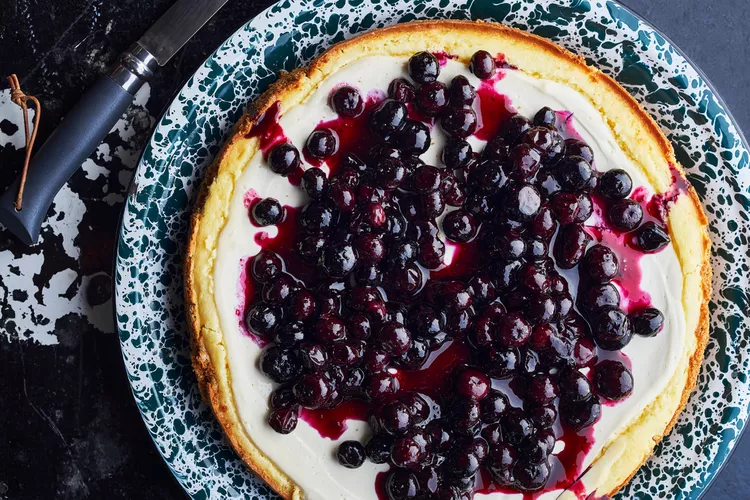

lasagna

Cheese Cake
Hidden beneath a mound of juicy summer berries (Bopp uses native huckleberries, but blueberries are fine), a thin layer of
sweetened sour cream crowns this luscious no-fuss cheesecake based on his great-grandmother’s recipe. Dollop the fluffy
batter into the pan gently for the best results.
- 2 cups crushed graham crackers
- 1/2 cup unsalted butter (4 ounces), melted
- 1/2 packed cup plus 2 teaspoons light brown sugar, divided
- 2 (8-ounce) package cream cheese, softened
- 4 large eggs, separated
- 3/4 cup plus 3 tablespoons granulated sugar, divided
- 1 1/2 teaspoons vanilla extract, divided
- 2 cups sour cream
- 2 cups fresh blueberries or huckleberries